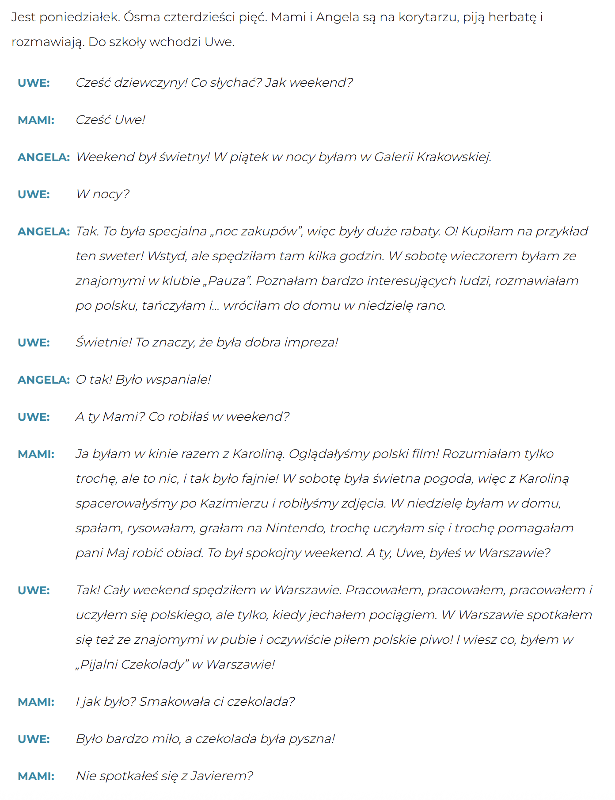
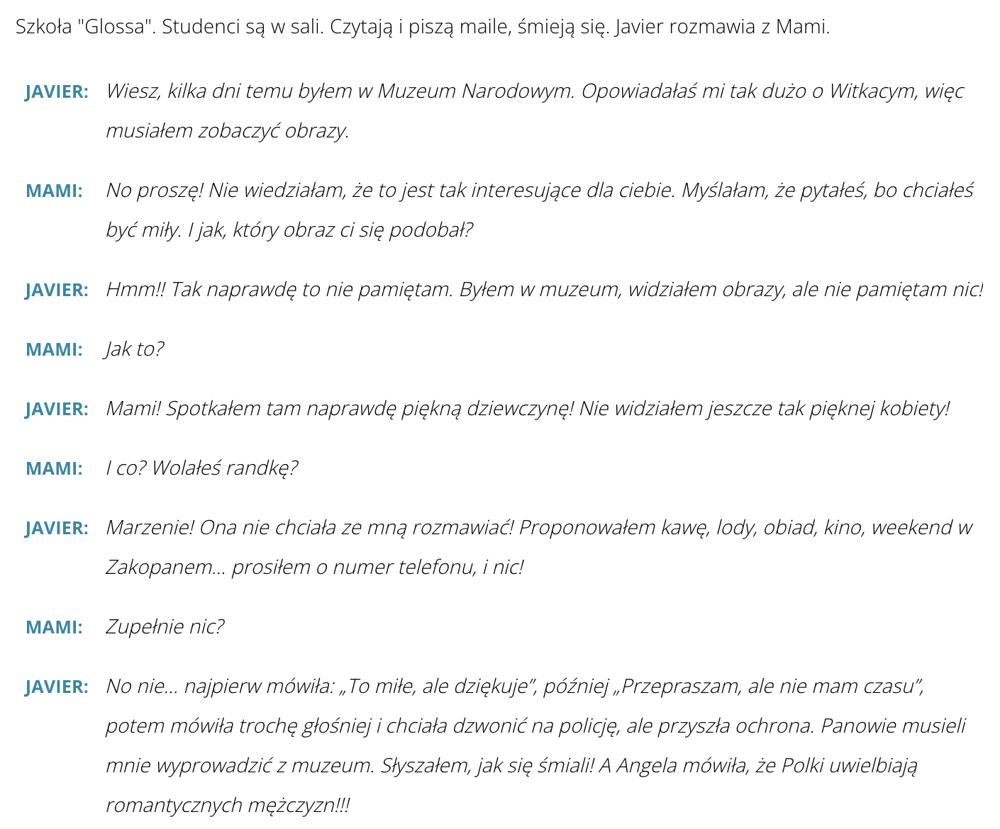
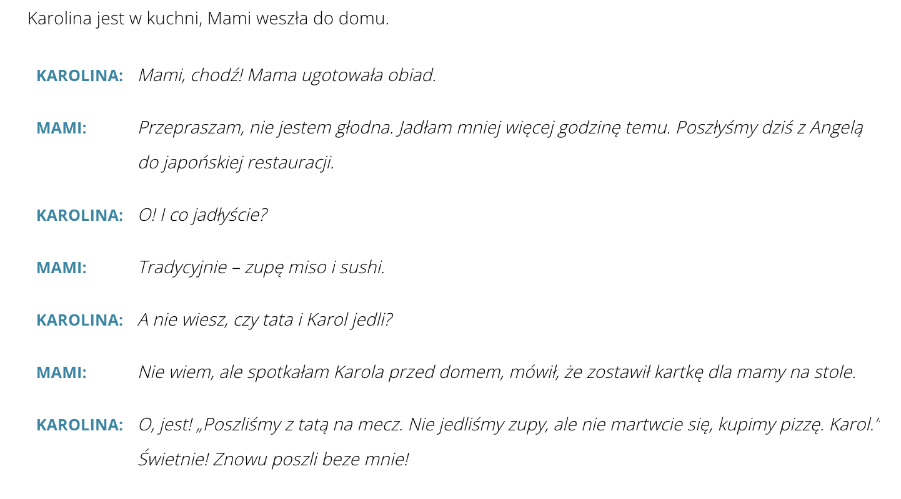

Krok Po Kroku 1
Temat 13 - Gdzie byłaś Mami?
A. "Zakopane, Zakopane, słońce, góry i górale..."
B. Chciałem dobrze!
C. Jadłaś już obiad?
D. Powtórzenie
A. "Zakopane, Zakopane, słońce, góry i górale..."
słownistwo - A. "Zakopane, Zakopane, słońce, góry i górale..." =>
⏳ BYĆ – прошедшее время (czas przeszły)
Польский глагол "być" (быть) в прошедшем времени изменяется по числу, роду и лицу.
Он
спрягается регулярно, но требует внимания к ударению и роду говорящего!
В польском языке для большинства глаголов основой в прошедшем времени является часть инфинитива без последней буквы -ć. Формы глаголов прошедшего времени имеют личные окончания, которые одинаковы для всех без исключения глаголов, например, kupić (-ć) kupiłem, kupiłeś…, lubić (-ć) lubiłem, lubiłeś…
Внимание! Каждое лицо и единственного и множественного числа имеет свои окончания, причем отличаются окончания зависимо от рода (и в единственном, и во множественном числе). Для 1 и 2 лица не используем формы 3 лица, как в русском языке!
Существительные во множественном числе делятся на две группы: слова, означающие лиц мужского пола (в группе есть хотя бы один мужчина), противопоставляются остальным – неодушевленным и одушевленным (напр. названия животных) существительным мужского рода, а также существительным женского и среднего рода.
Dialog1

⏳ 1. Прошедшее время большинства глаголов (czas przeszły)
Польские глаголы в прошедшем времени спрягаются регулярно – по числу, роду и лицу, как глагол „być”.
⏳ Как сказать "неделю назад", "в прошлом месяце" и т.п. по-польски?
В прошедшем времени часто выступают конструкции: wczoraj, 2 dni temu, tydzień temu, miesiąc temu, wiele lat temu td.
✅ Примеры:
- tydzień temu – неделю назад
- dwa tygodnie temu – две недели назад
- pięć tygodni temu – пять недель назад
- trzy lata temu – три года назад
- osiem miesięcy temu – восемь месяцев назад
🧠 Важно помнить!
После 2, 3, 4 и чисел, заканчивающихся на 2, 3, 4 (например, 22, 33), используется множ. число в именительном падеже:
→ dwa miesiące temu, trzy lata temu
После 5 и выше — родительный падеж мн.ч.:
→ pięć miesięcy temu, dziesięć lat temu
📌 Слова: 12, 13, 14... – это исключения!
Хотя заканчиваются на -2, -3, -4, они идут с dopełniacz (на -naście):
→ trzynaście tygodni temu ❗
B. Chciałem dobrze!
słownistwo - B. Chciałem dobrze! =>
Dialog2

🔧 Czasowniki zakończone na –eć
(Глаголы, оканчивающиеся на -eć, например: musieć, chcieć, wiedzieć)
в прошедшем
времени часто изменяют гласную "e" на "a".
📌 Правило: чередование e → a
Это чередование происходит в прошедшем времени:
- в мужском роде — только в ед. числе
- в женском и среднем — в ед. и во множественном числе

Dialog3

🍽️ JEŚĆ – есть (принимать пищу)
⏳ Прошедшее время (czas przeszły)
Глагол (nieregularny), и его формы в прошедшем време"jeść" — неправильныйни меняются нестандартно, особенно в форме my / wy / oni.
🚶♂️ IŚĆ – идти (несовершенный вид)
⏳ Czas przeszły – прошедшее время
Этот глагол — неправильный (nieregularny), и его формы нужно запомнить.
⏳ Czas przeszły + aspekt = Вид в прошедшем времени
В польском языке глаголы имеют два вида (aspekty):
- ✅ niedokonany – несовершенный вид (действие длилось, повторялось или неизвестно, чем закончилось)
- ✅ dokonany – совершенный вид (действие завершено, единичное, важен результат)